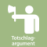

Urheber: Klaus Rössel
Lizenz:CC BY-NC 4.0.
Ein auf diesen Texten und Piktogrammen basierendes Kartenspiel ist unter https://rhetorisches-quartett.de/ erhältlich.
Totschlagargumente sind Behauptungen, Phrasen oder Floskeln, die zum Ziel haben, ein Gespräch ohne Widerrede zu beenden, sich aber dennoch durchzusetzen. Sie sind häufig inhaltsleer (→Chewbacca) oder so allgemein gefasst, dass sie schwer anzugreifen sind. Meist steht die Absicht im Vordergrund, einer Auseinandersetzung aus dem Weg zu gehen. Wer ein Totschlagargument anbringt, legt keinen Wert darauf, zu überzeugen, sondern will seinen Standpunkt durchsetzen, ohne diskutieren zu müssen. Darin unterscheidet es sich von anderen Vermeidungsstrategien, die die eigene Entscheidung zurückziehen oder vertagen. Ein Totschlagargument will Recht bekommen, ohne sich einer Auseinandersetzung zu stellen. Daher kommt es meist durch Personen in Machposition zur Anwendung, oder wenn versucht wird, Autorität zu demonstrieren. Oft wohnt einem Totschlagargument eine Herabwürdigung des Gegenübers inne (→Ad Hominem).

Ein auf diesen Texten und Piktogrammen basierendes Kartenspiel ist unter https://rhetorisches-quartett.de/ erhältlich.